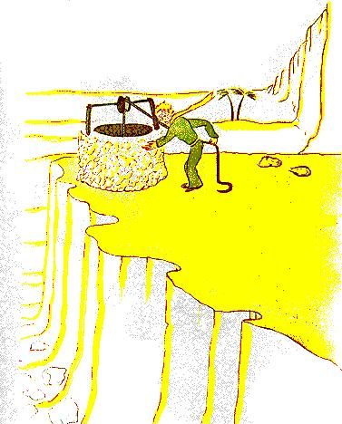

- Les hommes, dit le petit prince, ils s'enfournent dans les rapides, mais ils ne savent plus ce qu'ils cherchent. Alors ils s'agitent et tournent en rond...
Et il ajouta:
- Ce n'est pas la peine...
Le puits que nous avions atteint ne ressemblait pas aux puits sahariens. Les puits sahariens sont de simples trous creusés dans le sable. Celui-là ressemblait à un puits de village. Mais il n'y avait là aucun village, et je croyais rêver.
- C'est étrange, dis-je au petit prince, tout est prêt: la poulie, le seau et la corde...
Il rit, toucha la corde, fit jouer la poulie. Et la poulie gémit comme gémit une vieille girouette quand le vent a longtemps dormi.
- Tu entends, dit le petit prince, nous réveillons ce puits et il chante...
Je ne voulais pas qu'il fît un effort:
- Laisse-moi faire, lui dis-je, c'est trop lourd pour toi.
Lentement je hissai le seau jusqu'à la margelle. Je l'y installai bien d'aplomb. Dans mes oreilles durait le chant de la poulie et, dans l'eau qui tremblait encore, je voyais trembler le soleil.
- J'ai soif de cette eau-là, dit le petit prince, donne-moi à boire...
Et je compris ce qu'il avait cherché !
Je soulevai le seau jusqu'à ses lèvres. Il but, les yeux fermés. C'était doux comme une fête. Cette eau était bien autre chose qu'un aliment. Elle était née de la marche sous les étoiles, du chant de la poulie, de l'effort de mes bras. Elle était bonne pour le cœur, comme un cadeau. Lorsque j'étais petit garçon, la lumière de l'arbre de Noël, la musique de la messe de minuit, la douceur des sourires faisaient ainsi tout le rayonnement du cadeau de Noël que je recevais. 
- Les hommes de chez toi, dit le petit prince, cultivent cinq mille roses dans un même jardin... et ils n'y trouvent pas ce qu'ils cherchent.
- Ils ne le trouvent pas, répondis-je...
- Et cependant ce qu'ils cherchent pourrait être trouvé dans une seule rose ou un peu d'eau...
- Bien sûr, répondis-je.
Et le petit prince ajouta:
- Mais les yeux sont aveugles. Il faut chercher avec le cœur.
J'avais bu. Je respirais bien. Le sable, au lever du jour, est couleur de miel. J'étais heureux aussi de cette couleur de miel. Pourquoi fallait-il que j'eusse de la peine...
- Il faut que tu tiennes ta promesse, me dit doucement le petit prince, qui, de nouveau, s'était assis auprès de moi.
- Quelle promesse ?
- Tu sais... une muselière pour mon mouton... je suis responsable de cette fleur !
Je sortis de ma poche mes ébauches de dessin. Le petit prince les aperçut et dit en riant:
- Tes baobabs, ils ressemblent un peu à des choux...
- Oh!
Moi qui était si fier des baobabs !
- Ton renard... ses oreilles... elles ressemblent un peu à des cornes... et elles sont trop longues !
Et il rit encore.
- Tu es injuste, petit bonhomme, je ne savais rien dessiner que les boas fermés et les boas ouverts.
- Oh ! ça ira, dit-il, les enfants savent.
Je crayonnai donc une muselière. Et j'eus le cœur serré en la lui donnant:
- Tu as des projets que j'ignore...
Mais il ne me répondit pas. Il me dit:
- Tu sais, ma chute sur la Terre... c'en sera demain l'anniversaire...
Puis, après un silence il dit encore:
- J'étais tombé tout près d'ici...
Et il rougit.
Et de nouveau, sans comprendre pourquoi, j'éprouvai un chagrin bizarre. Cependant une question me vint:
- Alors ce n'est pas par hasard que, le matin où je t'ai connu, il y a huit jours, tu te promenais comme ça, tout seul, à mille milles de toutes les régions habitées ! Tu retournais vers le point de ta chute ?
Le petit prince rougit encore.
Et j'ajoutai, en hésitant:
- A cause, peut-être, de l'anniversaire ?...
Le petit prince rougit de nouveau. Il ne répondait jamais aux questions, mais, quand on rougit, ça signifie "oui", n'est-ce pas ?
- Ah! lui dis-je, j'ai peur...
Mais il me répondit:
- Tu dois maintenant travailler. Tu dois repartir vers ta machine. Je t'attends ici. Reviens demain soir...
Mais je n'étais pas rassuré. Je me souvenais du renard. On risque de pleurer un peu si l'on s'est laissé apprivoiser...
| Chapitre XXIV | |
Capítulo XXIV |
| Index | Capítulo XXV | |
| Chapitre XXVI | Capítulo XXVI |